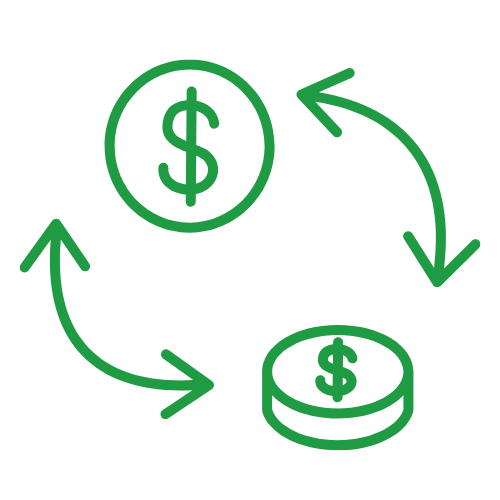

Isolamento Nacional
Controle Estatal Rígido

Intensificação de Trocas
Redução de Relações
Isolamento Nacional
Controle Estatal Rígido
Intensificação de Trocas
Redução de Relações
Explicação:
A GLOBALIZAÇÃO ECONÔMICA SE BASEIA NA AMPLIAÇÃO DAS TROCAS COMERCIAIS E FINANCEIRAS ENTRE OS PAÍSES, INTEGRANDO OS MERCADOS MUNDIAIS.